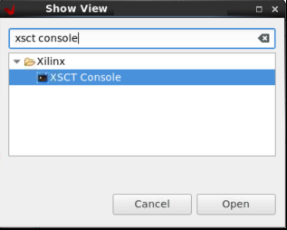
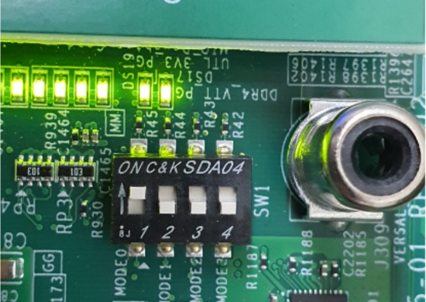
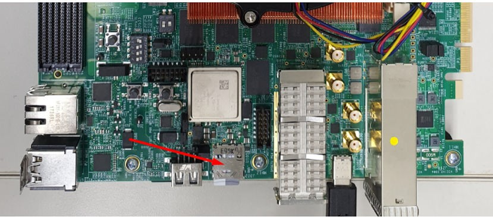

启动和配置¶
本章用于演示如何为 Versal™ ACAP 集成和加载引导加载程序、裸机应用（针对 APU/RPU）和 Linux 操作系统。本章将讨论下列主题：
系统软件：PLM、Arm® 可信固件 (ATF)、U-Boot
为独立应用生成启动镜像的步骤。
SD 启动的启动顺序以及 QSPI 和 OSPI 启动模式。
您可使用赛灵思 Vitis™ 软件平台和 PetaLinux 工具流程来实现这些配置。第 2 章：Versal ACAP CIPS 和 NoC (DDR) IP 核配置主要围绕如何在 PS 中为每个处理器单元创建软件块，而本章则解释如何在更大规模的系统中加载这些块。
系统软件¶
以下系统软件块适用于本章中的大部分启动和配置。
Platform Loader and Manager¶
Platform Loader and Manager (PLM) 软件在 Versal ACAP 的平台管理控制器 (PMC) 块中的某一专用处理器上运行。它负责启动和运行时间管理，包括器件的平台管理、错误管理、部分重配置以及子系统重新启动。PLM 可重新加载镜像，并可加载部分 PDI 和服务中断。PLM 会从启动源代码读取可编程器件镜像，PLM 软件可配置系统组件（包括 NoC 初始化、DDR 内存初始化、可编程逻辑和处理器系统），然后完成器件启动。
U-Boot¶
U-Boot 充当辅助启动加载器。在 PLM 交接后，U-Boot 会将 Linux 加载到 Arm A72 APU 上并基于开发板配置对处理器系统中的其余外设进行配置。U-Boot 可从不同存储器来源（如 eMMC、SATA、TFTP、SD 和 QSPI）访存镜像。U-Boot 可使用 PetaLinux 工具流程来进行配置和构建。
Arm 可信固件¶
Arm 可信固件 (ATF) 是透明的裸机应用层，在 APU 上的异常级别 3 (Exception Level 3, EL3) 中执行。ATF 包含安全监控 (Secure Monitor) 层，用于在安全环境和非安全环境之间进行切换。鉴于需调用 Secure Monitor 和实现“可信开发板启动要求 (Trusted Board Boot Requirements, TBBR)”，导致 ATF 层成为在 Versal ACAP 的 APU 上加载 Linux 的必备条件。PLM 可加载将由 APU 执行的 ATF，ATF 将在 EL3 中保持运行并等待服务请求。PLM 还可将 U-Boot 加载到将由 APU 执行的 DDR 中，U-Boot 将在 APU 上以 SMP 模式加载 Linux 操作系统。默认情况下，ATF (bl31.elf) 在 PetaLinux 中执行构建，此文件可在 PetaLinux 工程镜像目录中找到。
为独立应用生成启动镜像¶
Vitis 软件平台不支持为 Versal 架构自动创建启动镜像。要生成可启动镜像，请使用 Bootgen，它是包含在 Vitis 软件平台封装内的命令行实用工具。Bootgen 的主要功能是用于集成可启动镜像的各分区。Bootgen 使用 Bootgen 镜像格式 (BIF) 文件作为输入，并以二进制 BIN 或 PDI 格式生成单一文件镜像。它可输出单一文件镜像，此文件镜像可加载到非易失性存储器 (NVM)（QSPI 或 SD 卡）中。请使用以下步骤生成 PDI/BIN 文件：
如果尚未打开“XSCT Console”视图，请在 Vitis IDE 中单击“窗口 (Window) → 显示视图 (Show View)”打开此视图。在“Show View”Wizard 的搜索栏中输入
xsct console。单击“Open”打开控制台。
创建文件夹，在“XSCT Console”中输入以下命令以便在该文件夹中生成启动镜像：
mkdir bootimages cd bootimages/
将
<design-package>/<board-name>/standalone/<cips or cips_noc>/<apu or rpu>/目录中存在的 sd_boot.bif 文件、<Vitis platform project>/hw/<.pdi-file>中存在的 PDI 文件以及<Vitis application-project>/Debug文件夹中存在的应用 elf 文件复制到步骤 2 中创建的文件夹内。注意：如果需要，您可在自己选择的文本编辑器内打开
sd_boot.bif文件，并根据您的 Vitis 工程修改 PDI 或 elf 的名称。在“XSCT Console”视图中运行以下命令。
bootgen -image <bif filename>.bif -arch versal -o BOOT.BIN在“XSCT Console”视图中会显示以下日志。

SD 启动模式的启动顺序¶
以下步骤演示了 SD 启动模式的启动顺序。
要验证镜像，请将所需镜像复制到 SD 卡：
对于独立应用，请将
BOOT.BIN复制到 SD 卡。对于 Linux 镜像，请浏览至
<plnx-proj-root>/images/linux并将BOOT.BIN、image.ub和boot.scr复制到 SD 卡。
注意：您可使用发布的封装路径中所含现成测试镜像
<design-package>/<vck190 or vmk180>/linux/bootimages来启动 VCK190/VMK180 评估板，或者，还可参阅工程示例：使用 PetaLinux 创建 Linux 镜像，使用 PetaLinux 工具构建您自己的 Linux 镜像集合。将 SD 卡加载到 VMK180/VCK190 评估板上的 J302 连接器中。
将 Micro USB 线一端连接到 VMK180/VCK190 评估板上的 Micro USB 端口 (J207)，并将另一端连接到主机上打开的 USB 端口中。
按下图所示设置 SW1 开关，以将评估板配置为以 SD 启动模式来启动。

将 12V 电源连接到 VMK180/VCK190 6 针 Molex 连接器。
根据所用主机使用 Tera Term 或 Minicom 启动终端会话。为系统设置 COM 端口和波特率，如下图所示。

对于端口设置，请验证器件管理器中的 COM 端口并选择含 interface-0 的 com 端口。
使用电源开关 (SW13) 开启 VMK180/VCK190 评估板电源。
注意：对于独立镜像，在终端上会显示相应的日志。对于 Linux 镜像，在终端上启动顺序执行完成后，您可使用 user: root 和 pw: root 登录。随后，在终端上运行 gpiotest。这样您将看到如下图所示的日志。

QSPI 启动模式的启动顺序¶
本节旨在演示 QSPI 启动模式的启动顺序。对此，您需要按下图所示方式连接 QSPI 子卡（器件编号 X_EBM-01，REV_A01）：
图 2：VCK190 上的子卡

注意：对于独立应用，请将 boot.bin 复制到 SD 卡。对于 Linux 镜像，您可使用发布的封装路径中所含现成测试镜像
<design-package>/<vck190 or vmk180>/linux/bootimages来启动 VCK190/VMK180 评估板，或者，还可参阅工程示例：使用 PetaLinux 创建 Linux 镜像，使用 PetaLinux 工具构建您自己的 Linux 镜像集合。
您需遵循下列步骤将镜像刷写到子卡上：
请在子卡断电情况下安装子卡。
将启动模式开关 SW1 设置为 ON-OFF-OFF-OFF，如下图所示。

将 SD 卡插入开发板上的 SD 卡槽中，如下所示：

给开发板上电。在 U-Boot 阶段，出现“Hit any key to stop autoboot:”消息时，请按任意键，然后运行以下命令以将镜像刷写到 QSPI 子卡上：
sf probe 0 0 0 sf erase 0x0 0x10000000 fatload mmc 0 0x80000 boot.bin sf write 0x80000 0x0 ${filesize} fatload mmc 0 0x80000 image.ub sf write 0x80000 0xF00000 0x6400000 fatload mmc 0 0x80000 boot.scr sf write 0x80000 0x7F80000 0x999刷写完镜像后，关闭板上电源开关，将启动模式管脚设置更改为 QSPI 模式，即 ON-OFF-ON-ON，如下所示：
重新给开发板上电。这样，开发板即可使用 QSPI 闪存中的镜像完成启动。
© 2020 年赛灵思公司版权所有。